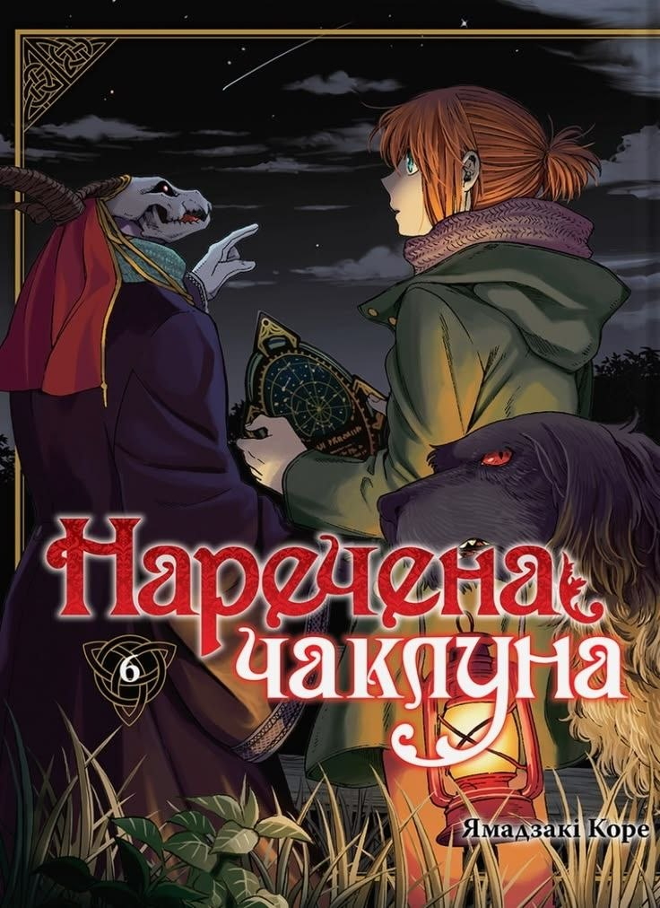
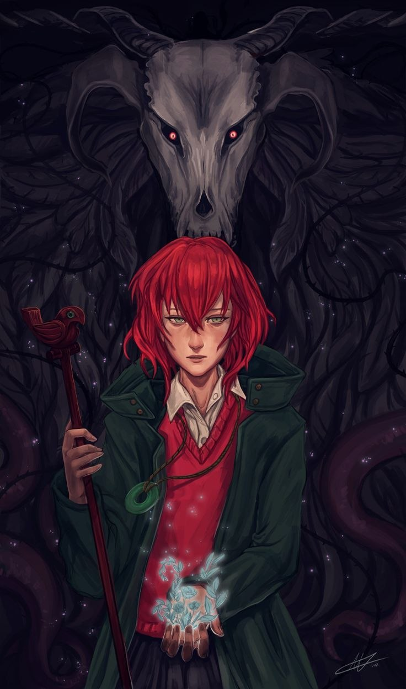
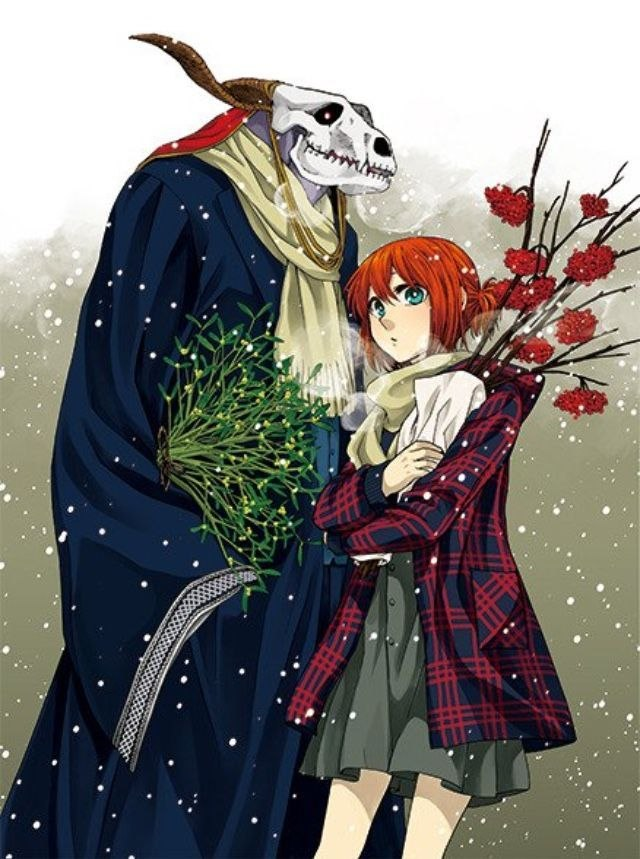

«Mahoutsukai no Yome» найбільше зачепила мене саме своєю атмосферою і тим, як вона подає історію через внутрішній стан Чісе. Мені дуже сподобалося, що це не просто історія про магію, а про людину, яка поступово вчиться жити, відчувати і приймати себе. Її шлях виглядає як повільне, іноді болісне відновлення — і через це все відчувається набагато реальніше.
Ще один момент, який мені дуже зайшов — це сам світ магії. Він не пояснюється прямо і до кінця, і саме це робить його таким живим і трохи моторошним. Магічні істоти тут не виглядають просто «милими фентезійними створіннями» — у них є щось давнє, незрозуміле і навіть небезпечне. Кожна зустріч з ними відчувається особливою, ніби ти сам потрапив у щось таємниче.
Але найбільше мені сподобалася динаміка між Чісе і Еліасом. Їхні стосунки дуже незвичайні і місцями навіть дивні, але саме це робить їх цікавими. Вони обидва вчаться один у одного: Чісе — жити і довіряти, а Еліас — розуміти людські емоції. Спостерігати за цим поступовим розвитком — це найсильніша частина всієї історії.


